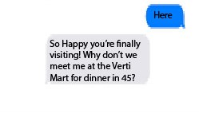

The mississippi stands stretched out before you. It's late in the afternoon around 4ish. The faint sound of children playing in Audobon Park touches your ears. A small barge and a Carnival cruise ship flow down the river. You get a text on your phone… It’s Wayne.
“Gosh dang it Wayne I’ll have to get another taxi…” you think to yourself. “The first one from Louis Armstrong was expensive enough….”
Another Text
Turn Around, and enjoy your new set of wheels!
From here you’ll take a journey around New Orleans. Links in text will take you to other bits of trivia. This Journey is by no means final and I implore you to do your own research if any of this interests you. Enjoy! -BW